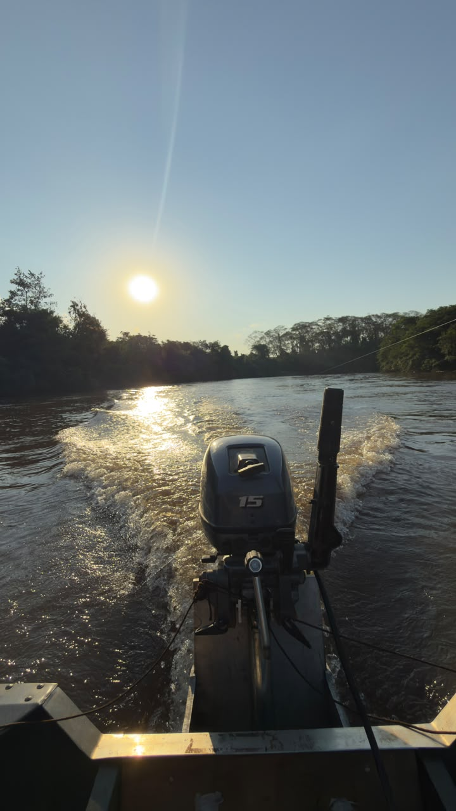
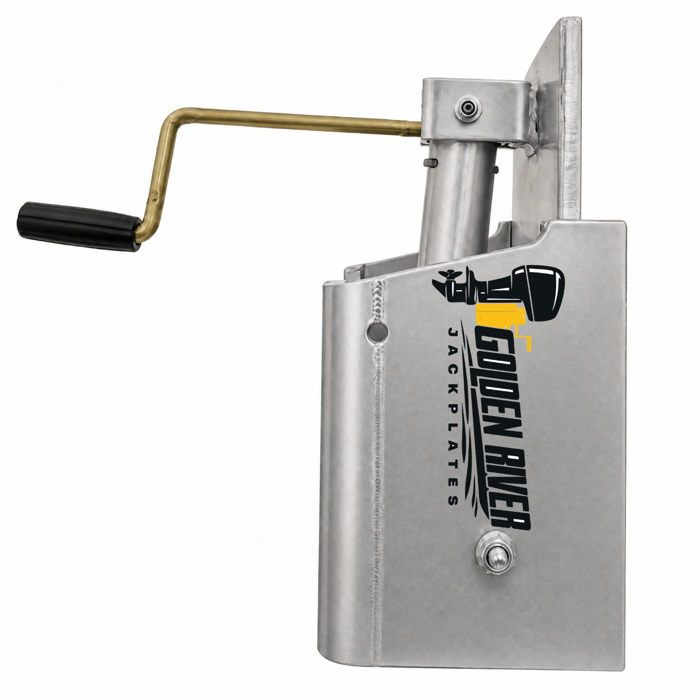
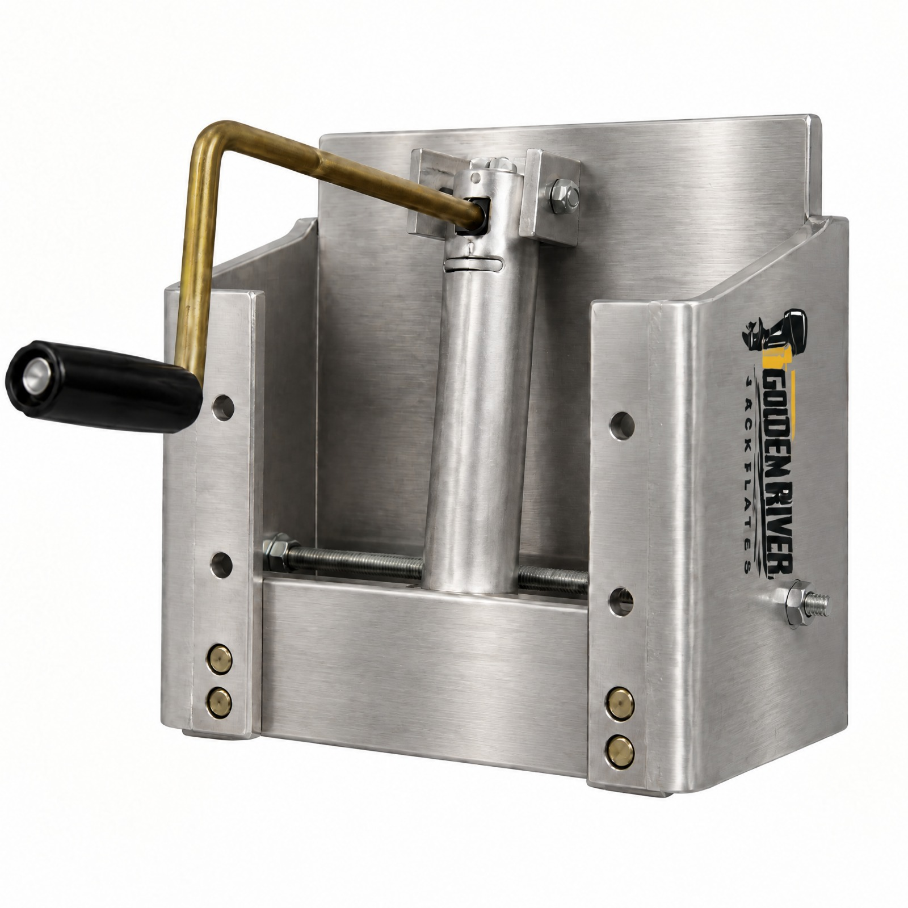
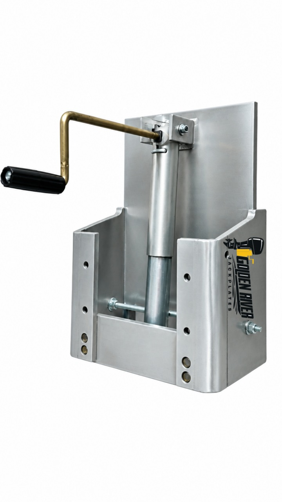
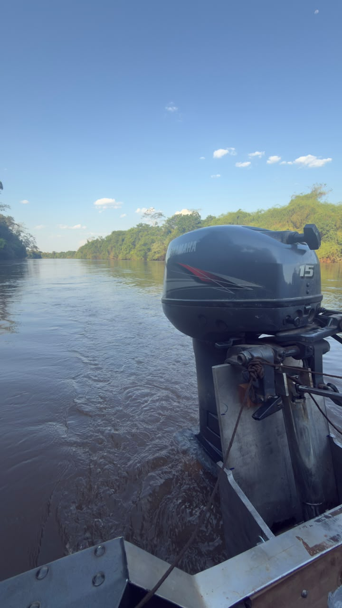

Alumínio naval
Estrutura produzida em alumínio naval, conforme especificação do fabricante.

GOLDEN RIVER JACKPLATES
Conheça o Jackplate Manual Golden River, desenvolvido em alumínio naval e pensado para motores de popa de 15 hp a 50 hp.
O PRODUTO
Uma solução manual para instalação entre o espelho de popa da embarcação e o motor de popa. O modelo é fabricado em alumínio naval, com chapas de 10 mm e acabamento escovado.
Indicado para conjuntos com motores de 15 hp a 50 hp, sujeito à conferência da compatibilidade com o barco, o motor e a instalação. Consulte a equipe Golden River antes da compra.
Ver ficha técnica →
QUEM SOMOS
A Golden River é uma empresa sul-mato-grossense criada por pessoas que gostam de pescaria, navegação e engenharia. Unimos esses interesses para desenvolver soluções náuticas práticas, como o nosso Jackplate Manual, com o objetivo de facilitar a experiência de quem está na água.
DIFERENCIAIS
Conheça os principais dados informados para o modelo manual Golden River.
Estrutura produzida em alumínio naval, conforme especificação do fabricante.
Espessura informada para as chapas do produto.
Ajuste acionado manualmente por manivela.

CONSTRUÇÃO E APLICAÇÃO
A compatibilidade depende das características do barco e do motor, incluindo padrão de fixação, altura do espelho de popa e espaço disponível. Confirme esses pontos com a Golden River antes de realizar a compra ou instalação.
USO E INSTALAÇÃO
Antes de instalar ou utilizar o Jackplate Manual Golden River, leia as orientações aplicáveis ao seu conjunto e siga as instruções dos fabricantes da embarcação, do motor e do próprio jackplate. Consulte os vídeos de orientação publicados nos canais oficiais e confirme a compatibilidade e a fixação antes de colocar a embarcação em uso.
FICHA TÉCNICA
Dados informados para o Jackplate Manual Golden River. Os campos pendentes podem ser atualizados quando as medidas forem confirmadas.
| Modelo | Jackplate Manual |
|---|---|
| Capacidade / motores | Para motores de até 50 hp |
| Compatibilidade informada | Motores de 15 hp a 50 hp; confirmar o conjunto antes da compra |
| Curso vertical | 15 cm |
| Setback (recuo) | 18 cm |
| Material | Alumínio naval |
| Espessura das chapas | 10 mm |
| Peso do conjunto | 20 kg |
| Dimensões | Consultar desenho técnico |
| Furação do barco | 4 furos |
| Furação do motor | Padrão — confirmar medidas aplicáveis |
| Altura do espelho de popa | 22 cm |
| Acabamento | Escovado |
| Acionamento | Manual |
| Garantia | 6 meses |
| Preço | Sob consulta |
A compatibilidade e a instalação devem ser confirmadas antes do uso. Não utilize os campos “A definir” como medidas de projeto.
GALERIA



COMPRAR
Entre em contato para consultar o preço, disponibilidade, prazo e compatibilidade com seu barco e motor. O valor ainda não foi informado no site.
GOLDEN RIVER
Preço sob consulta
Consultar com AndréConsultar com ClebersonCompra e disponibilidade confirmadas diretamente com a equipe.
FALE CONOSCO
Fale com a equipe Golden River para tirar dúvidas, confirmar compatibilidade e solicitar um orçamento.